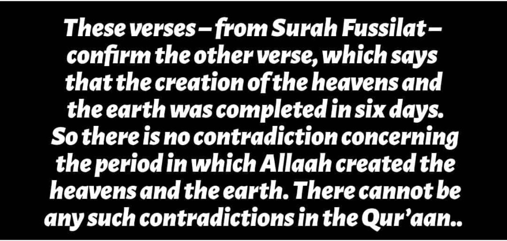
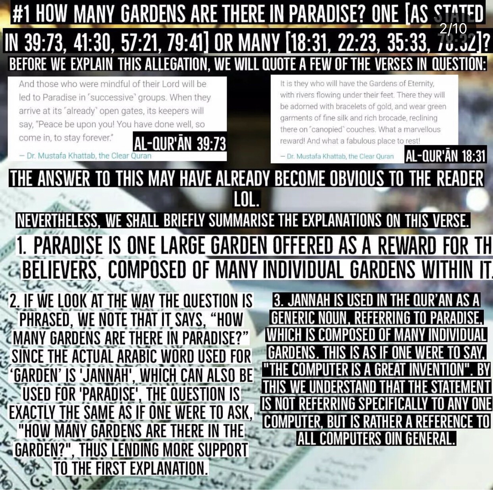
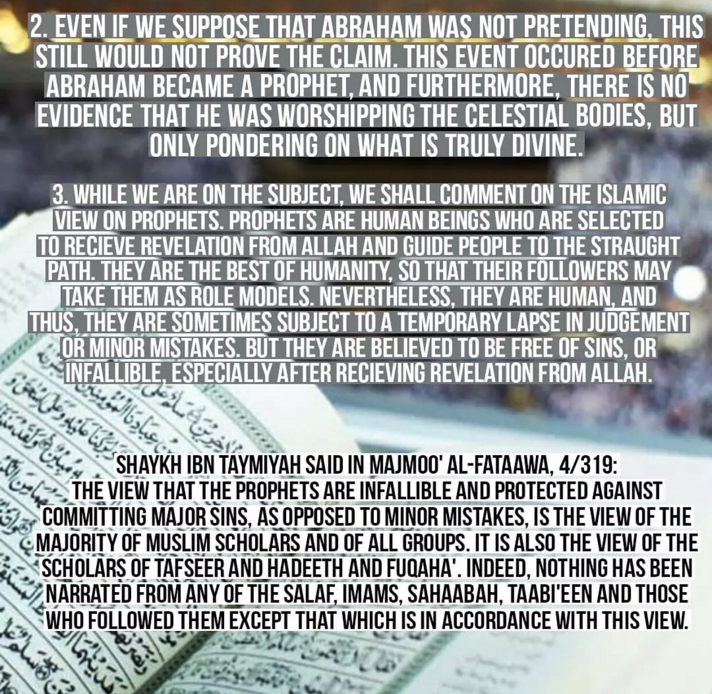
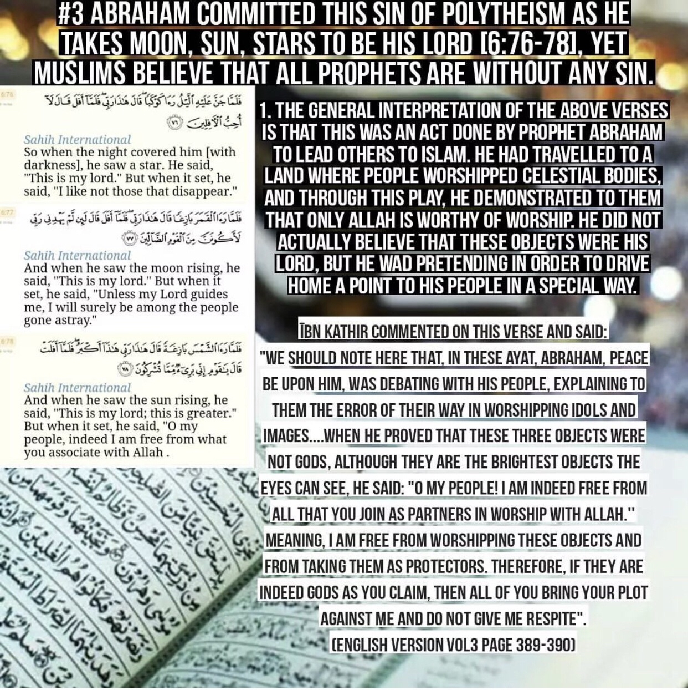
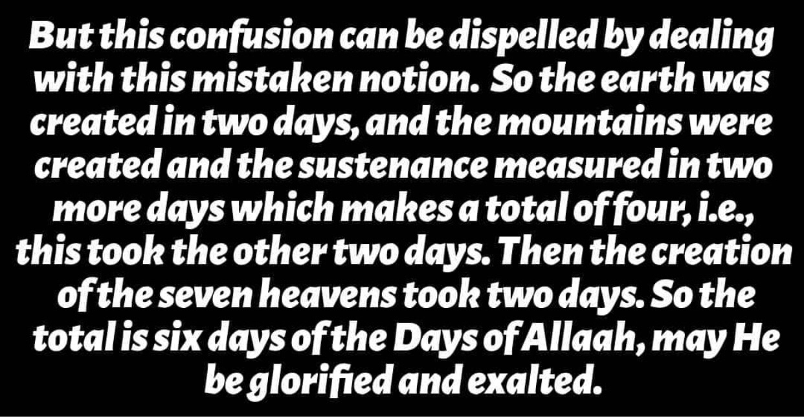
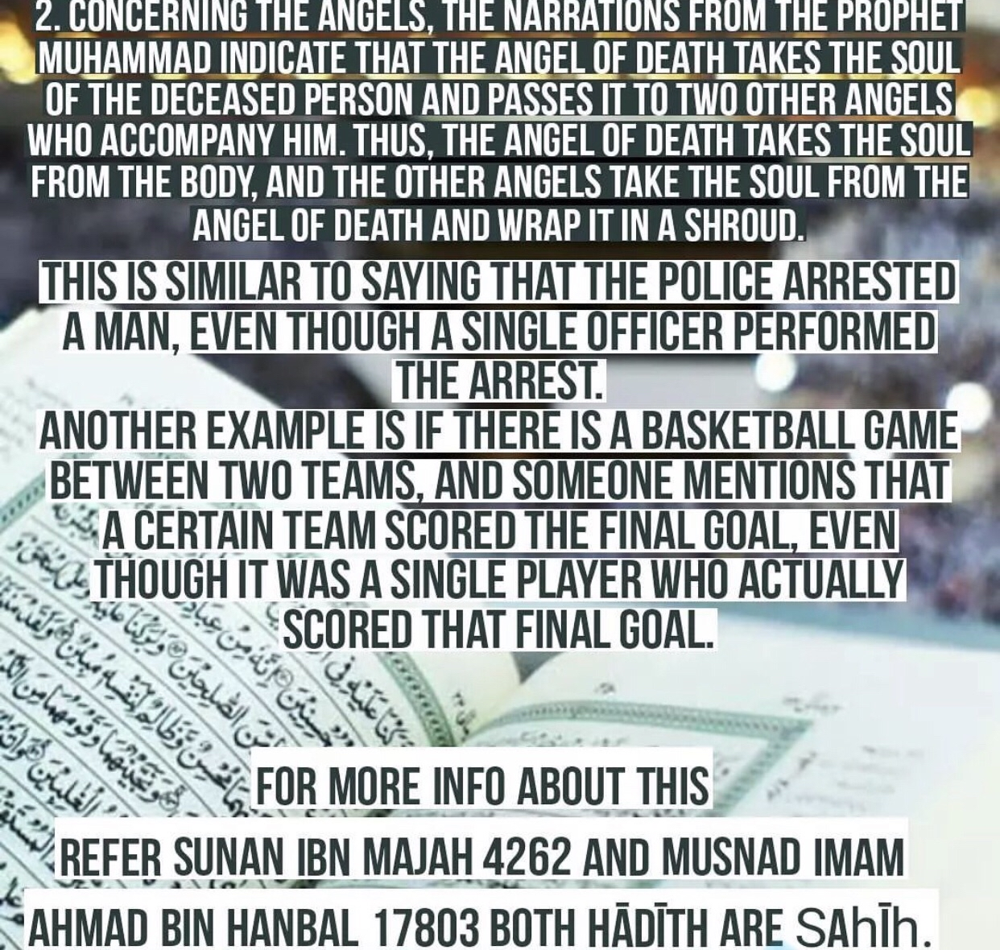
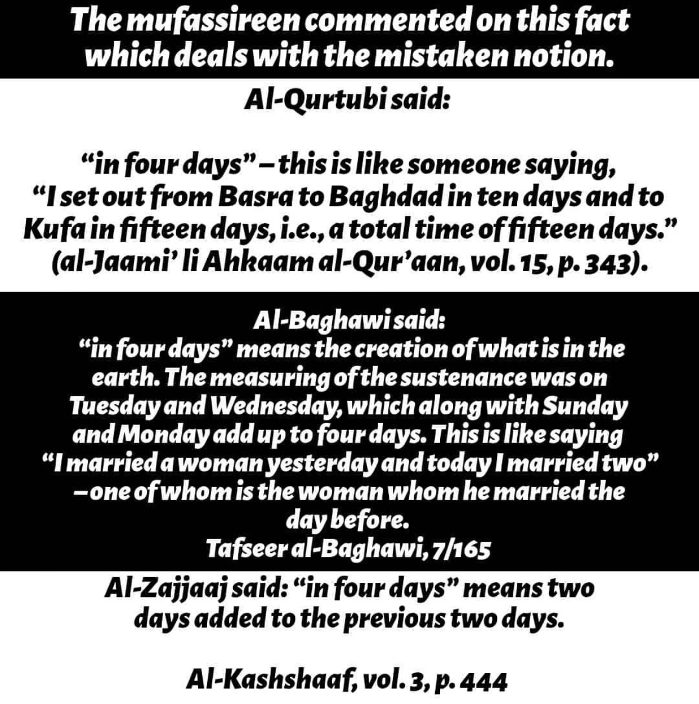
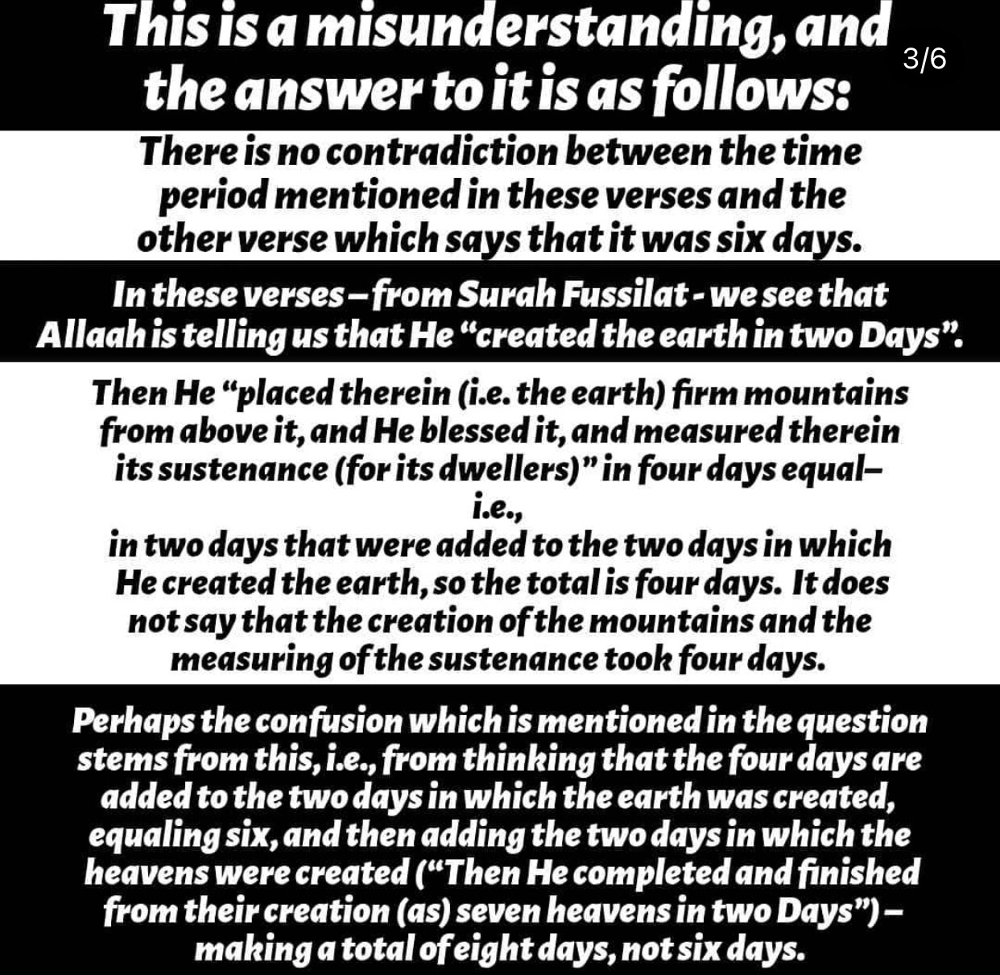
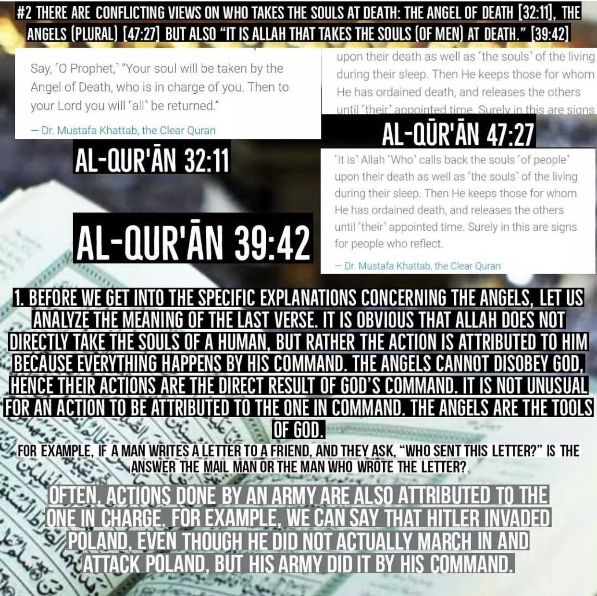
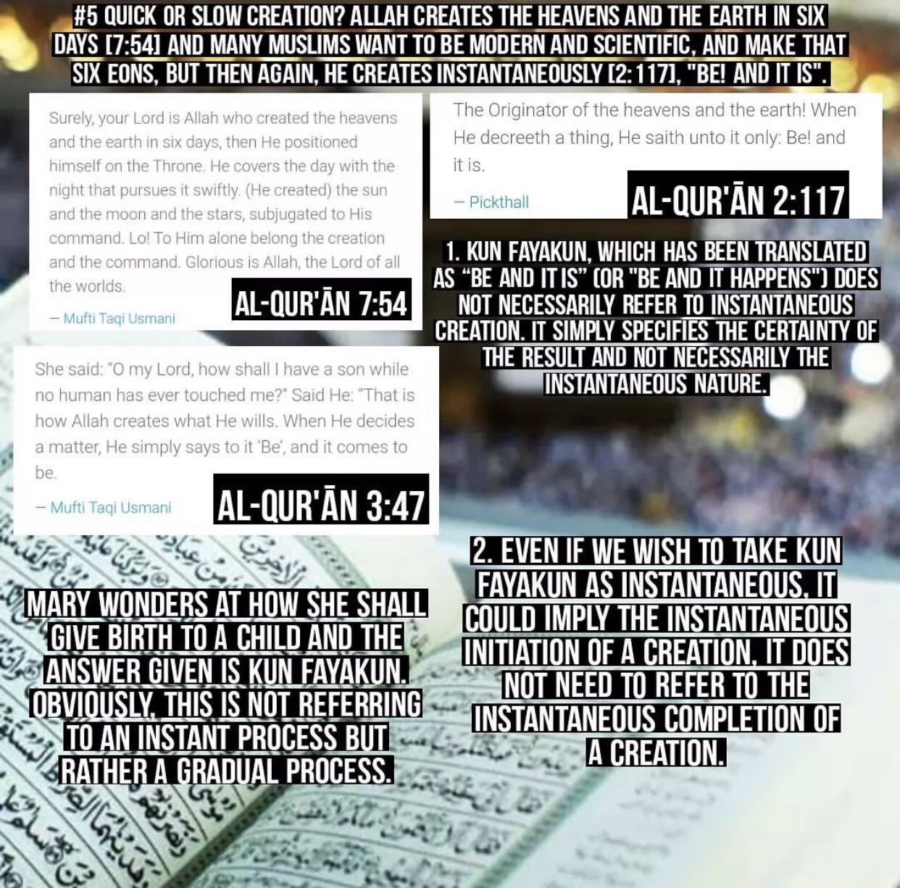
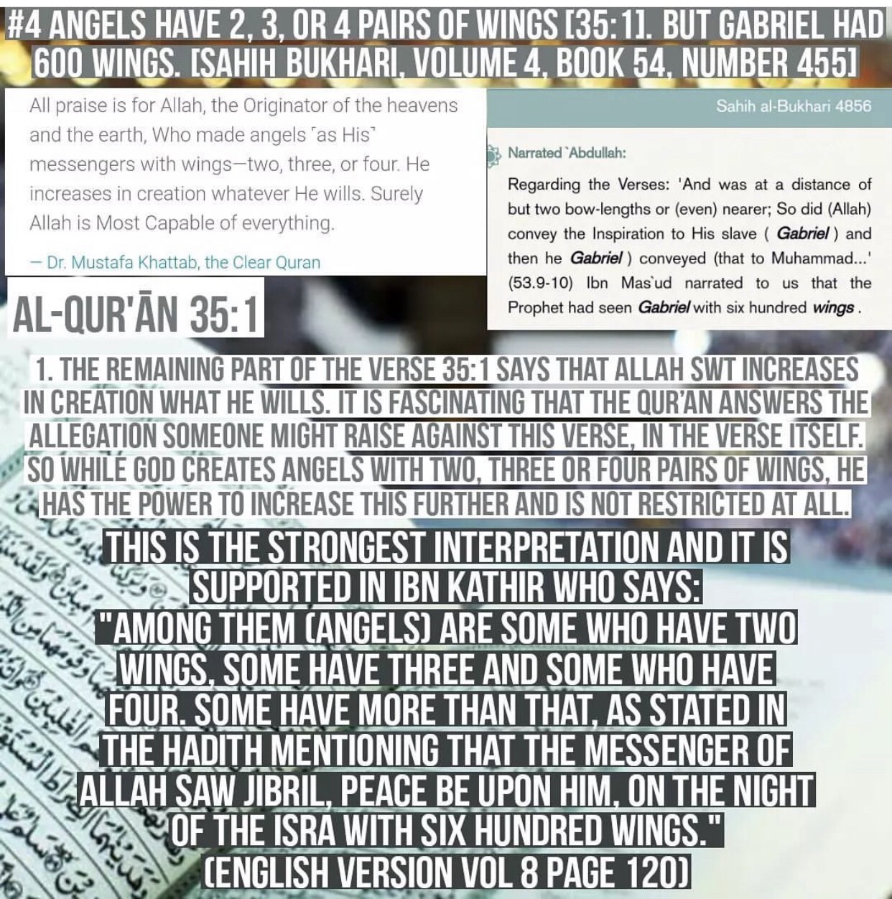
For the claim of 2:29 this is a false claim because it says he went to the sky in Arabic ila al-samaa ila indicates going to a place that already exists so Allah created the heavens then earth then made heavens 7
For the claim of the Qūr’ānīc passage about Pharaoh it is about preserving his body
Does Qūr’ānīc passage contradict on how to trait somebodies parents (58:22 & 31:15) ?
No! The true meaning is that you treat them good In this life however you don’t support their actions in any sort
Some other Qūr’ānīc contradictions refuted
https://www-bayanelislam-net.translate.goog/Suspicion.aspx?id=01-01-0040&_x_tr_sch=http&_x_tr_sl=ar&_x_tr_tl=en&_x_tr_hl=en&_x_tr_pto=wapp
https://bayanelislam-net.translate.goog/Suspicion.aspx?id=01-01-0041&_x_tr_sch=http&_x_tr_sl=ar&_x_tr_tl=en&_x_tr_hl=en&_x_tr_pto=wapp
https://www-bayanelislam-net.translate.goog/Suspicion.aspx?id=01-01-0038&_x_tr_sch=http&_x_tr_sl=ar&_x_tr_tl=en&_x_tr_hl=en&_x_tr_pto=wapp
https://www-ebnmaryam-com.translate.goog/tnakodat.htm?_x_tr_sch=http&_x_tr_sl=ar&_x_tr_tl=en&_x_tr_hl=en&_x_tr_pto=wapp
7:54 and 36:40
The two verses are identical and they have the same meaning.
The first verse does not indicate that the night comes before the day, but it indicates that both the night and day follow each other and comes after it, without delay, seeking it rapidly.
It is for this reason that the interpreters of the Quran considered the verse in Surah al-A’raaf [Quran 7:54], to mean the same thing as a the verse in Surah Yaseen [Quran 36:40]; that each of the day and night follow one another without delay.
Ibn Katheer may Allaah have mercy upon him said: “He brings the night as a cover over the day, seeking it rapidly”, meaning, the darkness goes away with the light, and the light goes away with the darkness. Each of them seeks the other rapidly, and does not come late, for when this vanishes, the other comes, and vice versa. Allah also said: {And a sign for them is the night. We remove from it [the light of] day, so they are [left] in darkness. And the sun runs [on course] toward its stopping point. That is the determination of the Exalted in Might, the Knowing. And the moon - We have determined for it phases, until it returns [appearing] like the old date stalk. It is not allowable for the sun to reach the moon, nor does the night overtake the day, but each, in an orbit, is swimming.} [Quran 54:37-40] {Nor does the night overtake the day} means, the night follows the day in succession and does not come later or earlier than it should be. This is why Allah said here, {seeking it rapidly}.” [End of quote]
Therefore, this is very clear in illustrating what we have mentioned above.
Does Surah 6:14, Surah 7:143 and Surah 2:30 contradict?
Out of all humans, Adam (pbuh) was the first prophet. Also, each prophet had their own nation. We are from the nation of Muhammad (pbuh). Of course, Musa (pbuh) was the first to submit from his nation, and Muhammad (pbuh) was the first to submit from our nation.
Does Surah 2:125-129 and Surah 28:46 contradict?
Muhammad (pbuh) was a fulfilment of their supplication. There was no other Prophet sent to the Arabs besides them. If they merely went to Arabia, that doesn't make them "Prophet of the Arabs".
Does Surah 4:48 contradict Surah 4:153?
Anyone who dies upon shirk is not forgiven in the Hereafter. But if you repent, then you may be forgiven.
Does surah 2:234 and 2:240 contradict?
According to the majority of the scholars 2:240 was abrogated by 2:234. The waiting period is what's mentioned in 2:234 i.e. 4 months and 10 days.
Does surah Surah 10:92 contradict Surah 17:103?
Allah preserved his body, but drowned him.
Do Surahs: 19:76, 96:2, 21:30, 16:4, 15:26, 3:59 and 11:61 contradict?
Allah created man when he was nothing. Also, Adam was created from the earth – i.e. from its dust – which was then mixed with water to form mud, which then became mud. And this dust was created from the earth which is partly sand and when it is mixed it becomes sounding clay like the clay of pottery. Hence when Allah describes the creation of Adam in the Quran, in each case He describes one of the stages through which his creation passed and through which the mud was formed. Then after that the sons of Adam started to multiply and they were created through water which is the sperm and fluids which are emitted by men and women, as is well known. And then, the term “Clot of Blood” refers to a stage of the embryology.
Do Surahs 20:109, 34:23, 43:86 contradict Surahs 2:123, 6:51, 82:19?
The context of the Verses indicate that intercession for the disbelievers will be denied, but for the believers it will be accepted inshallah.
Do surah 7:109 and surah 26:34 contradict each other
It is talking about 2 diffrent instances actually if you continue reading 26:37-38 the magicians where about to come to Moses that was before the encounter. 1st instance he gathered the people of pharoah without the magicians (26:39) next they brought the magicians in 7:109 even if not it is interpreted that they said it after
There is no contradiction if they both said it
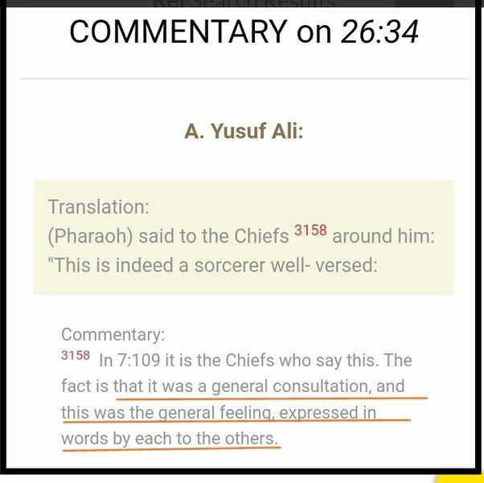
Quran 35:18 and 29:13
(And verily, they shall bear their own loads, and other loads besides their own.) Here Allah tells us that those who call others to disbelief and misguidance will, on the Day of Resurrection, bear their own sins and the sins of others, because of the people they misguided. Yet that will not detract from the burden of those other people in the slightest, as Allah says:
لِيَحْمِلُواْ أَوْزَارَهُمْ كَامِلَةً يَوْمَ الْقِيَـمَةِ وَمِنْ أَوْزَارِ الَّذِينَ يُضِلُّونَهُمْ بِغَيْرِ عِلْمٍ
(That they may bear their own burdens in full on the Day of Resurrection, and also of the burdens of those whom they misled without knowledge) (16:25). In the Sahih, it says:
«مَنْ دَعَا إِلَى هُدًى كَانَ لَهُ مِنَ الْأَجْرِ مِثْلُ أُجُورِ مَنِ اتَّبَعَهُ إِلَى يَوْمِ الْقِيَامَةِ مِنْ غَيْرِ أَنْ يَنْقُصَ مِنْ أُجُورِهِمْ شَيْئًا، وَمَنْ دَعَا إِلَى ضَلَالَةٍ كَانَ عَلَيْهِ مِنَ الْإثْمِ مِثْلُ آثَامِ مَنِ اتَّبَعَهُ إِلَى يَوْم القيامة من غير أن ينقص من آثامهم شيئا»
(Whoever calls others to true guidance, will have a reward like that of those who follow him until the Day of Resurrection, without it detracting from their reward in the slightest. Whoever calls others to misguidance, will have a burden of sin like that of those who follow him until the Day of Resurrection, without it detracting from their burden in the slightest.) In the Sahih, it also says:
«ما قتلت نفس ظلما إلا كان على ابن آدم الأول كفل من دمها، لأنه أول من سن القتل»
(No person is killed unlawfully, but a share of the guilt will be upon the first son of Adam, because he was the first one to initiate the idea of killing another.)
Source: Tafsir ibn kathir 29:13
Do 2:219, 16:67 and 5:90-91 contradict each other?
Surah Al-Baqara (The Cow)
2:219
They ask you [Prophet] about intoxicants and gambling: say, ‘There is great sin in both, and some benefit for people: the sin is greater than the benefit.’ They ask you what they should give: say, ‘Give what you can spare.’ In this way, God makes His messages clear to you, so that you may reflect
Translation: Abdul Haleem | Medinan
Surah An-Nahl (The Bee)
16:67
From the fruits of date palms and grapes you take sweet juice and wholesome provisions. There truly is a sign in this for people who use their reason.
Translation: Abdul Haleem | Meccan
The verse 16:67 mentions ‘سكرا’ and states that from the fruits of date palms and grapes we have the capacity to derive ‘سكرا’, but 2:219 states that ‘خمر' , which constitutes ‘سكرا' , is to be abstained from.
16:67 was revealed before 2:219. The abstinence of intoxicants came after the mention of the ability to derive intoxicant from these fruits.
Surah 16 was revealed in Makkah except for the last three verses, that is, verses 126, 127, 128 which were revealed in Madinah. Surah 2 was revealed in Madinah except for verse 281 which was revealed in Mina.
Surah Al-Maaida (The Table)
5:90
You who believe, intoxicants and gambling, idolatrous practices, and [divining with] arrows are repugnant acts- Satan’s doing- shun them so that you may prosper.
5:91
With intoxicants and gambling, Satan seeks only to incite enmity and hatred among you, and to stop you remembering God and prayer. Will you not give them up?
Translation: Abdul Haleem | Medinan
Surah 5 is the third last surah to be revealed of the quran, and was revealed in Madinah except for verse 3 which was revealed at Arafah, and explicates the final prohibition of ‘خمر’.
Surah 16 details our capacity and ability to derive it from fruits, not mentioning anything about avoiding it or it being prohibited, then later, in Surah 2, it is mentioned that there is both good in it and also greater harm in it, insinuating that it is to be abstained from, and finally, in surah 5, it finalises the prohibition of ‘خمر’ completely as, just how it is stated in Surah 2, the bad in it outweighs the good in it, and so it is forbidden.
These verses would be problematic if one of them had said, oh, that Khamr is permissible to take from, but in fact, these verses are a microcosm of the symbiosis between the the general quranic revelation and the lack of contradiction therein.
The first revealed verse highlights our ability to extract Khamr, the second revealed verse details that there is both good in it, but there is also more bad in it that outweighs the good. The final revealed verse prohibits it as a finalisation of the Khamr subject, building off the previous two verses.
Both the chronology of these verses and what they are actually saying are evidence enough that these are not contradictory.
————————————————————
English cc (what was created first heaven or earth)
https://m.youtube.com/watch?v=SC_VT1hd0Zo
د. هيثم طلعت Dr. Haitham Talaat
أيهما خُلق أولا: السماء أم الأرض؟ Which was Created First: Heaven ...
"The commentator Al-Qurtubi said that the statement of Qatada is correct - God willing - which is that Allah first created the smoke of the sky, then created the earth, then rose to the sky while it was still smoke, and then leveled it out before spreading out the earth.
The scholar Ibn Ashur stated in his work Al-Tahrir wal-Tanwir that there is a difference of opinion among the early scholars regarding the meaning of the narrations concerning the creation of the heavens and the earth. The majority, including Mujahid, Al-Hasan, and Ibn Abbas, believe that the creation of the earth preceded that of the heavens, citing the verse in Surah Ha Mim As-Sajdah (41:9-11) that says, "Say, ‘Do you deny Him who created the earth in two days? And do you set up equals to Him?’ He is the Lord of the worlds. He placed firm mountains on it and blessed it, and in four days measured out its sustenance, equally for all who ask; then He turned to the sky, which was smoke..." Qatada, Al-Suddi, and Al-Muqatil, on the other hand, believe that the creation of the heavens came first, citing the verse in Surah An-Naziat (79:27-30) that says, "Are you a more difficult creation or is the heaven? Allah constructed it. He raised its height and perfected it. He darkened its night and brought out its daylight. And after that He spread out the earth," and they also argue that the word "then" in the previous verse indicates a chronological order.
The scholar Ibn Ashur himself favors the opinion that the creation of the heavens came before that of the earth, citing the verse in Surah Al-Baqarah (2:29) that says, "It is He who created for you all that is in the earth. Then He rose to the sky, and fashioned it into seven heavens. He has knowledge of all things," and because the cosmological observations suggest that the earth is a separate sphere that is part of the solar system, and the apparent sequence of creation in the Quran implies that the creation of the heavens came first. However, he also acknowledges that the Quran often employs a general style in discussing such matters in order to avoid disputes among opposing views.
Abu Hayyan, another commentator, also favors the opinion that the creation of the heavens came first, and interprets the verse in Surah Al-An'am (6:101) that says, "The Originator of the heavens and the earth! How can He have a child when He has no consort, and He has created everything and has full knowledge of all things?" as suggesting that creation is not a matter of materialization or physical generation, but rather of divine decree, that God has determined that something will exist, and that He has ordained that it will happen in a certain manner and at a certain time. Thus, the creation of the earth in two days does not necessarily imply that it preceded the creation of the heavens, as divine decree does not necessarily require immediate implementation.
In conclusion, there is a difference of opinion among scholars regarding the sequence of creation between the heavens and the earth. While the majority opinion favors the creation of the earth before that of the heavens, some scholars, including Ibn Ashur and Abu Hayyan, argue that the heavens were created first based on their interpretation of certain Quranic verses."
eople who are conditioned to find contradiction and error in the word of Allah claims that if the inheritance verses are applied, the remainder inheritance can’t be distributed without error in different virtual environments (every time by setting out from the same example) and they add that supposedly Omer who notice this matter tries to save this situation by AVL-AVLIYE system which was invented by him. I will tell you about my thoughts on this nonsense based on the rumor culture later, but let’s explain this matter now…..
Let us first give a memorized / copied example so that those who do not know can understand.
An example for this matter :………………. Suppose a man died and three daughters, a sister, a mother, a father and a wife was left behind. According to the verses, the sharing of the inheritance will be as follows:
This website contains a detailed refutation of all contradictions alleged against the Qur'an.
https://nocontradictionsinquran.wordpress.com/
Contradictions in Quran:Refutations
Saif min Suyufillah
Contradictions in Quran:Refutations
Yes,there is no Contradiction at all.Discover it yourself !!!